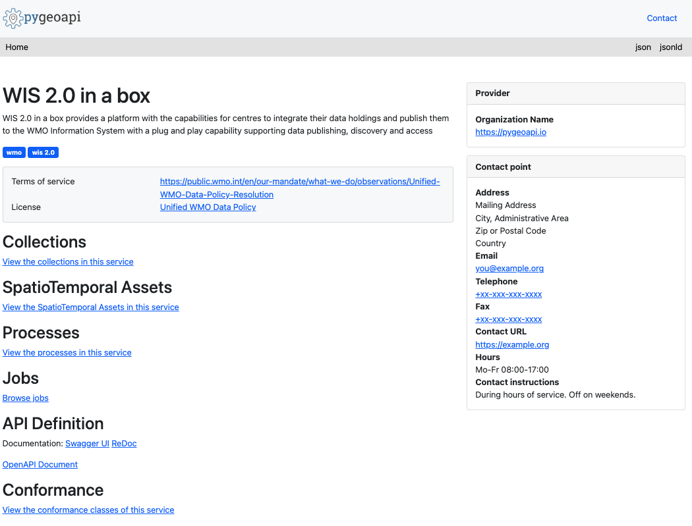
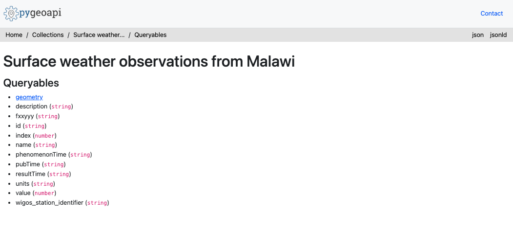

使用 wis2box API 查询数据
学习成果
通过本实践课程，您将能够：
- 使用 wis2box API 查询和筛选您的气象站
- 使用 wis2box API 查询和筛选您的数据
引言
wis2box API 提供了一种机器可读的方式，用于发现和查询已经输入到 wis2box 中的数据。该 API 基于 OGC API - Features 标准，并使用 pygeoapi 实现。
wis2box API 提供以下集合的访问权限：
- 气象站
- 发现元数据
- 数据通知
- 每个配置的数据集一个集合，存储来自 bufr2geojson 的输出（数据映射配置中需要启用插件
bufr2geojson来填充数据集合中的项目）。
在这个实践课程中，您将学习如何使用数据 API 浏览和查询已经输入到 wis2box 中的数据。
准备工作
Note
在您的网络浏览器中导航到 wis2box API 登陆页面：
http://<your-host>/oapi

检查集合
从登陆页面，点击 'Collections' 链接。
Question
在结果页面上您看到了多少个数据集合？您认为每个集合代表什么？
点击以显示答案
应该显示 4 个集合，包括“气象站”，“发现元数据”，和“数据通知”
检查气象站
从登陆页面，点击 'Collections' 链接，然后点击 'Stations' 链接。

点击 'Browse' 链接，然后点击 'json' 链接。
Question
返回了多少个气象站？将这个数字与 http://<your-host>/wis2box-webapp/station 中的气象站列表进行比较。
点击以显示答案
API 中的气象站数量应该与您在 wis2box webapp 中看到的气象站数量相等。
Question
我们如何查询单个气象站（例如 Balaka）？
点击以显示答案
使用 API 查询 http://<your-host>/oapi/collections/stations/items?q=Balaka。
Note
上述示例基于马拉维测试数据。尝试针对您在之前练习中输入的气象站进行测试。
检查观测数据
Note
上述示例基于马拉维测试数据。尝试针对您在练习中输入的观测数据进行测试。
从登陆页面，点击 'Collections' 链接，然后点击 '来自马拉维的地面天气观测' 链接。

点击 'Queryables' 链接。

Question
哪个可查询项可以用来按气象站标识符过滤？
点击以显示答案
正确的可查询项是 wigos_station_identifer。
导航回前一页（即 http://<your-host>/oapi/collections/urn:wmo:md:mwi:mwi_met_centre:surface-weather-observations）
点击 'Browse' 链接。
Question
我们如何可视化 JSON 响应？
点击以显示答案
通过点击页面右上角的 'JSON' 链接，或者在网络浏览器中向 API 请求添加 f=json。
检查观测数据的 JSON 响应。
Question
返回了多少条记录？
Question
我们如何将响应限制为 3 条观测数据？
点击以显示答案
在 API 请求中添加 limit=3。
Question
我们如何按最新的观测数据对响应进行排序？
点击以显示答案
在 API 请求中添加 sortby=-resultTime（注意 - 符号表示降序排序）。要按最早的观测数据排序，更新请求以包含 sortby=resultTime。
Question
我们如何按单个气象站过滤观测数据？
点击以显示答案
在 API 请求中添加 wigos_station_identifier=<WSI>。
Question
我们如何以 CSV 格式接收观测数据？
点击以显示答案
在 API 请求中添加 f=csv。
Question
我们如何显示单个观测数据（id）？
点击以显示答案
使用针对观测数据的 API 请求中的特征标识符，查询 API http://<your-host>/oapi/collections/{collectionId}/items/{featureId}，其中 {collectionId} 是您的观测数据集合的名称，{itemId} 是感兴趣的单个观测数据的标识符。
结论
恭喜！
在这个实践课程中，您学习了如何：
- 使用 wis2box API 查询和筛选您的气象站
- 使用 wis2box API 查询和筛选您的数据